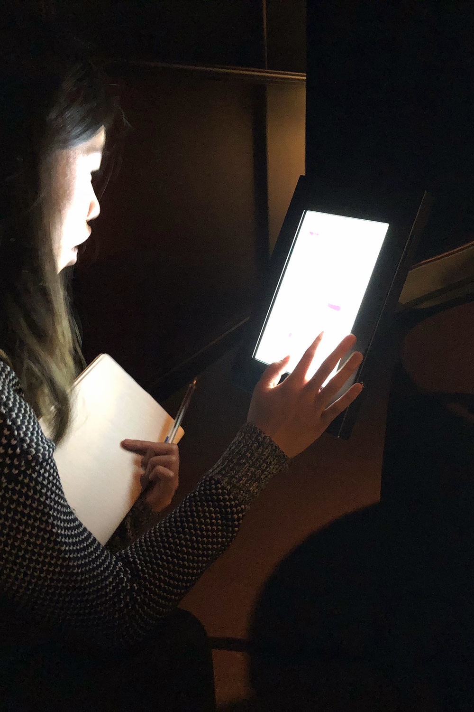
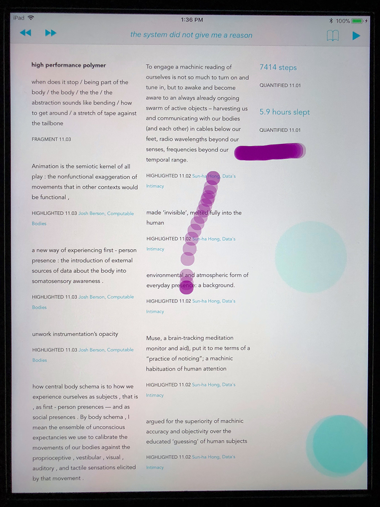

Spark Gap
This experimental mobile browser asks how an interface might express the tensions created where digital language, physical proximity, and intersubjectivity intersect. The interface lets each user witness neighboring users' touch behaviors layered in ephemeral trails and text fragments on their own screen. The software also uses that behavior to continually reconfigure browsed text into an accumulating collaboration, making reading a performance of writing. This work explores how digital language negotiates the gap between readers as we share anonymous physicality but diffuse digital intimacy, plumbing the tensions alive in the intersections of reading-writing, physical-digital, self-other.
Featured in "Hindered Bodies" exhibition, February 2018, SCA Gallery, University of Southern California.